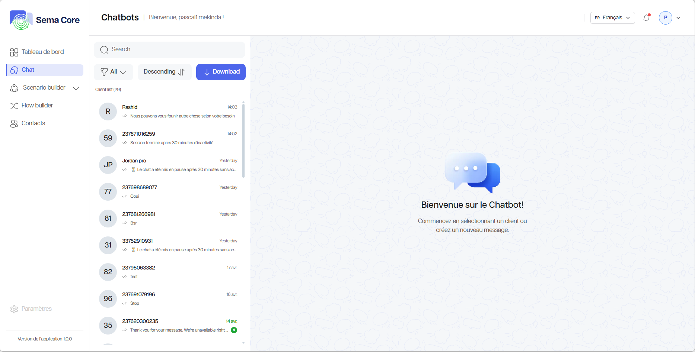
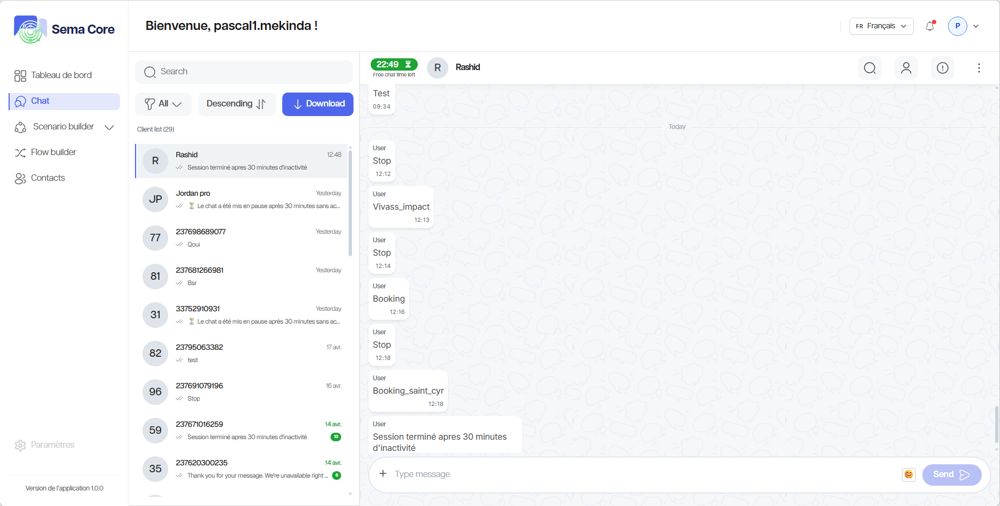
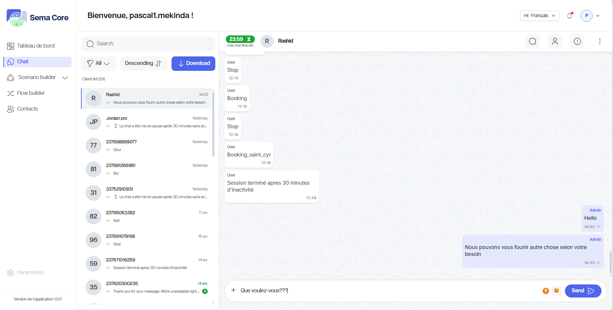
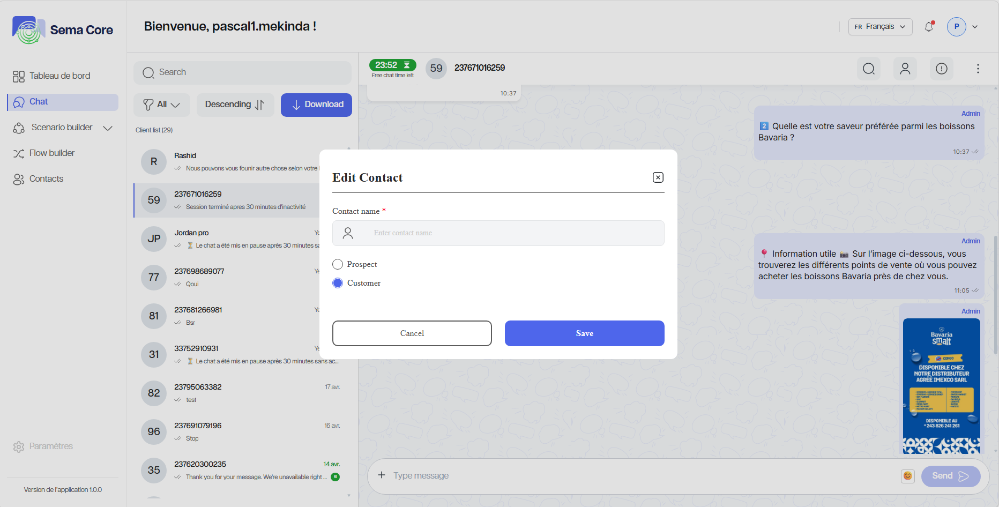
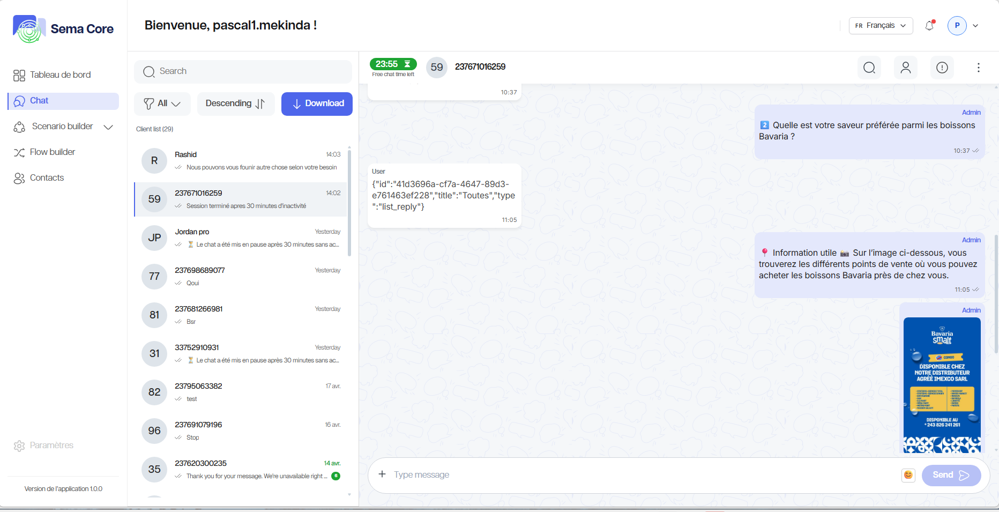

Chat et conversations
Le module Chat permet de suivre les échanges entre les clients et le chatbot. Il sert à consulter les conversations, vérifier les réponses automatisées et reprendre la main lorsqu’une intervention humaine est nécessaire.
Objectif du module
Le module Chat permet de :
Consulter les conversations entrantes ;
Suivre le statut d’un échange ;
Répondre manuellement si nécessaire ;
Visualiser les informations d’un contact ;
Comprendre quel scénario ou flow a été déclenché ;
Contrôler la qualité de l’expérience client.
Identifier les points d’amélioration des scénarios.
Analyser les questions fréquentes pour enrichir le chatbot.
{kind=link}

Étape 1 — Ouvrir les conversations
1. Connectez-vous à Sema Core.
2. Dans le menu, ouvrez Chat.
3. Vérifiez la liste des conversations.
Étape 2 — Lire une conversation
1. Cliquez sur une conversation dans la liste.
2. Consultez les messages envoyés par le client.
3. Consultez les réponses envoyées par le chatbot.
4. Vérifiez les dates et heures des messages.
5. Identifiez si la conversation est toujours active.
{kind=link}

Étape 3 — Répondre manuellement
Si votre rôle l’autorise, vous pouvez reprendre une conversation.
1. Ouvrez la conversation.
2. Cliquez dans la zone de réponse.
3. Rédigez le message.
4. Relisez le contenu.
5. Cliquez sur Envoyer.
6. Vérifiez que le message apparaît dans l’historique.
{kind=link}

Étape 4 — Consulter les informations du contact ou modifier un contact
Dans une conversation, un panneau peut afficher les informations du contact.
Vérifiez notamment :
Le nom ;
Le numéro ;
Les informations enregistrées ;
Le type de contact (client, prospect, etc.) ;
Les tags associés.
{kind=link}

Étape 5 — Comprendre l’automatisation déclenchée
Une conversation peut être alimentée par un scénario ou un flow.
Pour analyser l’origine d’une réponse :
1. Repérez les messages automatisés.
2. Vérifiez le nom du scénario ou du flow.
3. Notez le moment où l’utilisateur est sorti du parcours automatisé.
4. Ouvrez le Scenario Builder si vous devez corriger la logique.
{kind=link}

Bonnes pratiques
1. Répondez rapidement aux conversations qui nécessitent une intervention humaine.
2. Utilisez un ton clair et cohérent avec la marque.
3. Ne modifiez pas un scénario en production sans test préalable.
4. Notez les questions fréquentes pour améliorer le chatbot.
5. Vérifiez régulièrement les conversations bloquées ou non résolues.
Bon à savoir
Astuce
Les conversations sont une source précieuse pour améliorer les scénarios. Lorsqu’une même question revient souvent, ajoutez un nœud ou une branche dédiée dans le Scenario Builder.